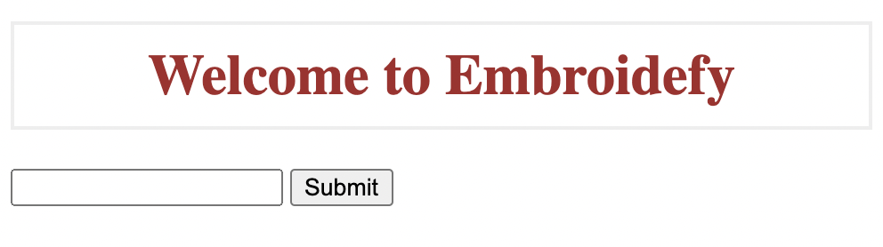
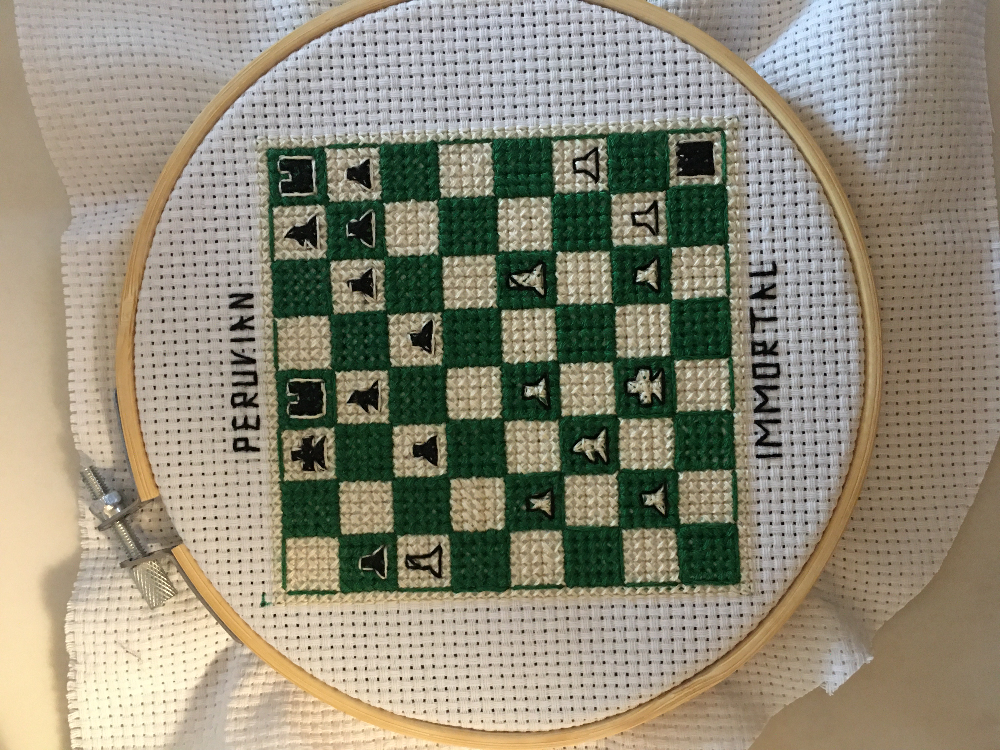
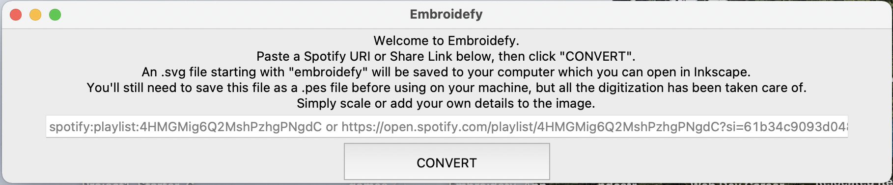
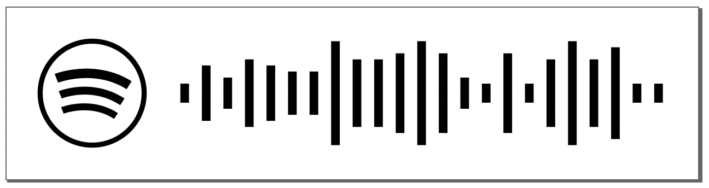

Scot Nielson
<<< back
"Embroidefy" Spotify Machine Embroidery Code Converter
 This past summer a friend came to me with a problem. She loved her new embroidery machine, but it takes a long time to digitize images for embroidery and the software that can do it is fairly expensive. I didn't know much about embroidery (except for the cross-stitch of a famous chess game I made one winter break), but I felt there had to be a solution out there somewhere for embroidery hobbyists.
This led to me discovering and learning to use Inkstitch, an open source embroidery digitization software. Once I learned how to digitize images by hand and started designing some simple fonts, I realized the process could be automated for repetitive images, like Spotify Codes.
That's when I made Embroidefy. This barebones app, built with Python and Flask, takes either a Spotify media share link or a URI and converts the cooresponding Spotify Scannable code to an embroidery-safe format. I created a browser version on Heroku and a Desktop version made with Tkinter that's available for download on Github. After converting a code, you'll be able to open the returned SVG file in InkStitch to scale, customize, and export your digitized file to the desired format, such as .PES.
The process used by the app is fairly simple. First, it retrieves the Spotify code using a scannables link with custom query parameters, like this one. It then determines the ratios of each bar of the code to the maximum bar, which correspond to manually digitized bars I only had to create once. Using those ratios it stitches together the digitized pieces into a final file. Feel free to try it out!